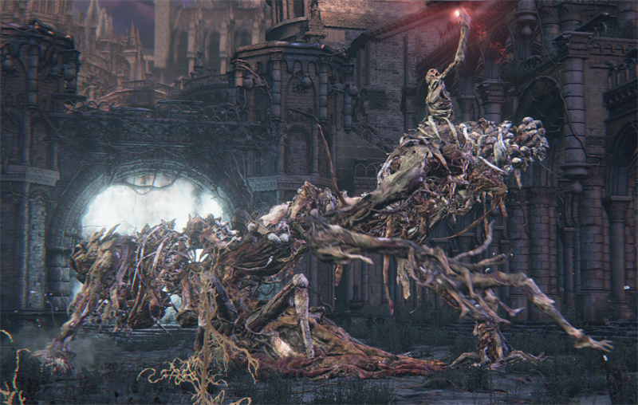
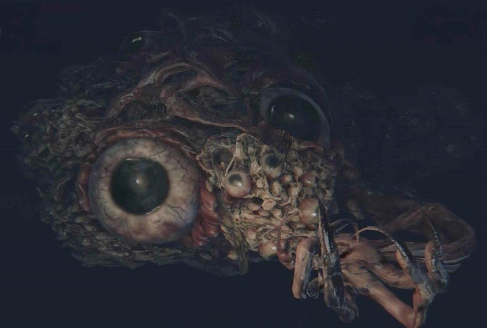
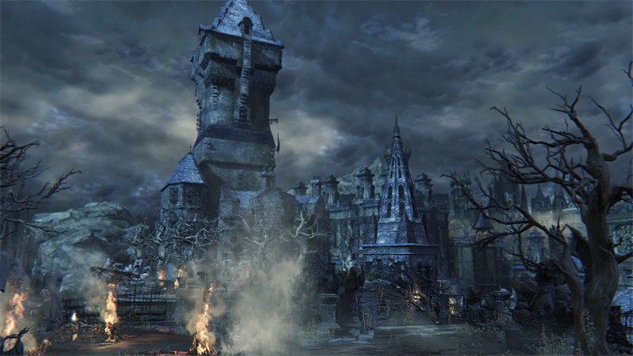
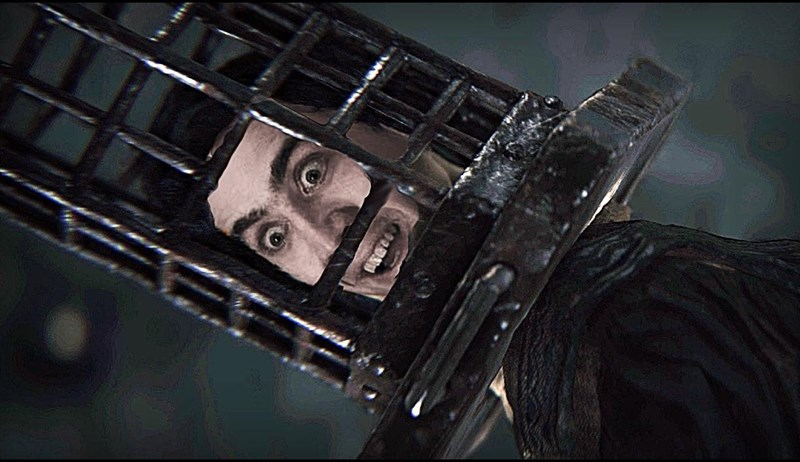
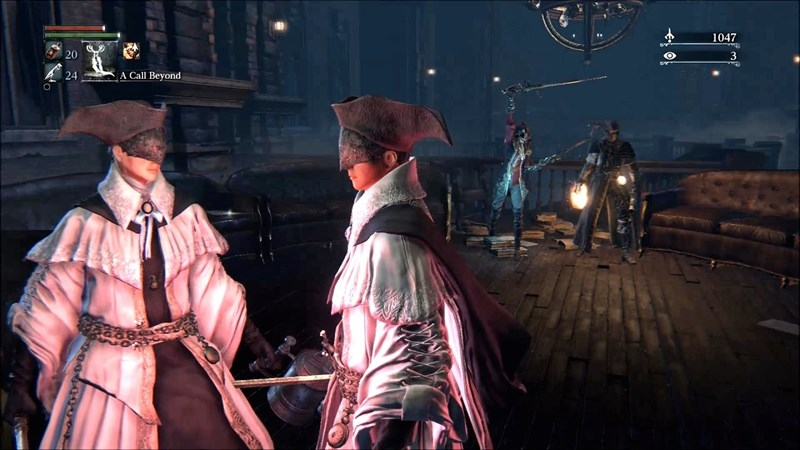
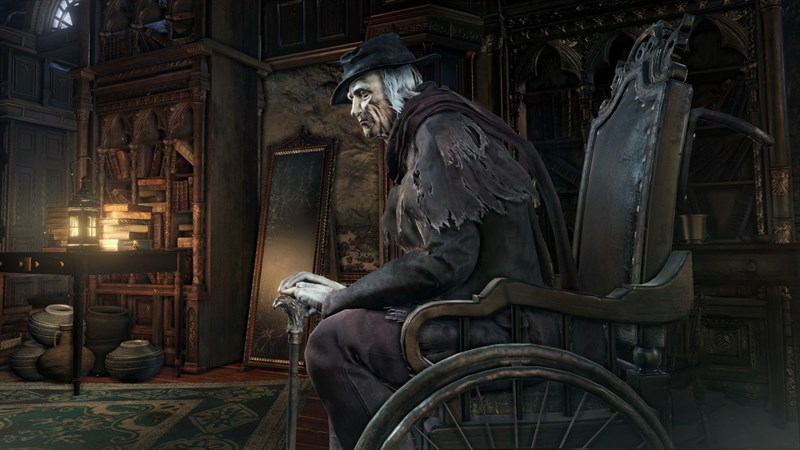
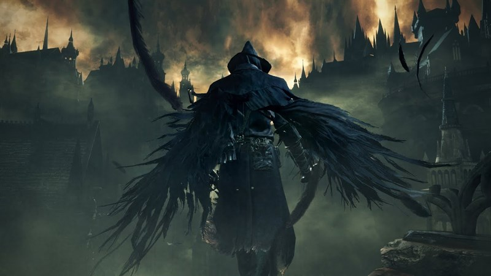
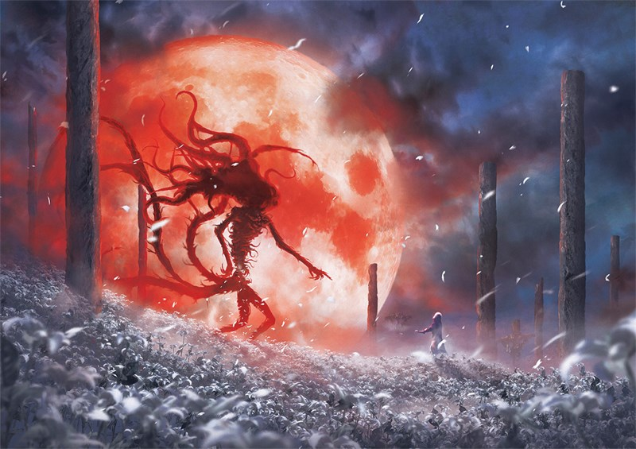

Little Information about Bloodborne
Click to startGeneral Information for Bloodborne is listed on this category page. Please see the links below to find out more about general aspects of the game.
Bloodborne Story

Giới thiệu nhân vật bối cảnh
Cốt truyện Bloodborne diễn ra ở bối cảnh học viện Byrgenwerth hoang tàn và bị chôn vùi trong khu rừng cấm Forbidden Woods.
Old Blood (cổ huyết): Đây chính là nguyên nhân gây ra trận dịch bệnh tại Yharnam. Old Blood được các học giả Byrgenwerth tìm được dưới mê cung. Chất lỏng này có thể chữa trị được mọi loại bệnh tật, mọi vết thương.
The Great Ones (đấng toàn năng tối cao): Chúng có hình dạng trông như quái vật cực kì gớm ghiếc với chân tay dài ngoẵng, khuôn mặt không rõ ràng, hốc mắt mở to. .
Loài sinh vật này có biệt tài là điều khiển không gian hoặc thời gian và chúng sở hữu linh hồn bất tử.

Trong cốt truyện Bloodborne, có tổng cộng 7 Great Ones mà người chơi bắt gặp bao gồm: Amygdala: Có hình dạng như một con nhện lớn với 8 cái chân, được người dân Yharnam sùng bái, sở hữu sức mạnh vượt không gian. Brain of Mensis: Dùng để nghiên cứu. Kos: Giới tính là nữ, có hình dạng như một con mực ống, có nguồn gốc từ đại dương.
 Phần 2: Khám phá nhà thờ Healing Church và nguồn gốc cơn dịch bệnh Yharnam
Câu chuyện bắt đầu ở Old Yharnam - một thành phố nhỏ hẻo lánh, nơi đây đang bị một đại dịch là Ashen Blood hoành hành. Cách đặc trị duy nhất đó là “thuốc giải độc hình nón” (Antidote),tuy nhiên loại thuốc này chỉ có thể giúp người bệnh kéo dài sự sống được ít ngày. Lúc này, Laurence cũng đã xuất hiện tại Yharnam và anh ta đã dùng “Old Blood” để chữa trị hoàn toàn căn bệnh này. Sau khi danh tiếng vang dội, Laurence đã tạo lập trụ sở của mình là nhà thờ Healing ở trung tâm Yharnam để tiếp tục chữa bệnh.
The School of Mensis: được đặt tại ngôi làng Yaharul Người đứng đầu nhóm này cũng là một trong những học giả thuộc nhóm Laurence. Mục tiêu của nhóm này nghiên cứu, tìm cách liên lạc với Great Ones. Họ tạo ra Mensis Cage - một chiếc lồng bằng sắt, có phần bao quanh đầu để bảo vệ bộ não.
 The Choir: chuyên nghiên cứu Ebrietas (đã đề cập phía trên) và thực hiện các thí nghiệm lên người sống để tìm ra cách tiến hóa Kin. Bọn chúng tập trung các đứa trẻ mồ côi lại và thực hiện thí nghiệm lên chúng. sau đó chuyển chúng đến Lumenflower Gardens để tiến hóa thành các Kin. Để đạt được mong muốn của mình, những nhóm người trên đã bất chấp tất cả, điều đó đã để lại những hậu quả khôn lường.
Phần 3: Giải thích cái kết và tình tiết trong game
Thứ nhất, chấp nhận lời đề nghị của Gehrman để ông ta chém chết mình. Người chơi sẽ tỉnh dậy ở thành phố Yharnam khi bình minh ló dạng, đồng nghĩa với việc trò chơi săn đuổi kết thúc. Đoạn kết hiện ra cảnh Gehrman đang quỳ gối trước một ngôi mộ như lời chào tiễn biệt.
Tuy nhiên, đây chỉ là một kết thúc "giả". Bởi The Hunter thực chất vẫn không thể thoát ra khỏi cơn ám ảnh của Old Blood. Bằng chứng là Eileen người đã từng chấp nhận lời đề nghị của Gehrman nhận ra kết thúc chỉ là ảo tưởng.
Thứ hai, The Hunter không chấp nhận lời đề nghị của Gehrman và không nuốt đủ 3 Umbilical Cord. Người chơi sẽ phải chiến đấu với Gehrman. Lúc này, Moon Presence sẽ xuất hiện. Hunter’s Dream vốn dĩ là do quái vật này tạo ra nên khi Gehrman chết thì phải có một người khác thay thế và người này chính là The Hunter. Anh ta sẽ vĩnh viễn sống trong giấc mơ và ở lại trong cuộc săn đuổi không hồi kết này.
Thứ ba, The Hunter không chấp nhận lời đề nghị của Gehrman, nuốt đủ 3 Umbilical Cord. Sau khi đánh bại Gehrman Moon Presence xuất hiện và định nuốt chửng The Hunter nhưng không thành. nhờ 3 Umbilical Cord mà The Hunter đã đánh bại được Moon Presence. Kết thúc game là hình ảnh The Hunter biến thành hình dạng của The Great Ones sơ sinh và được Doll chăm sóc.
